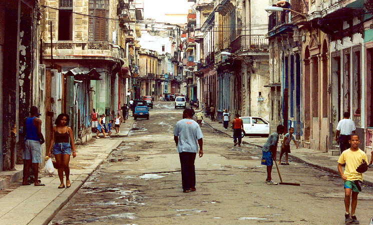
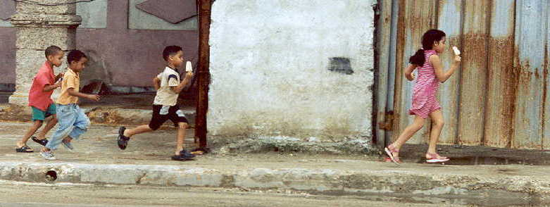
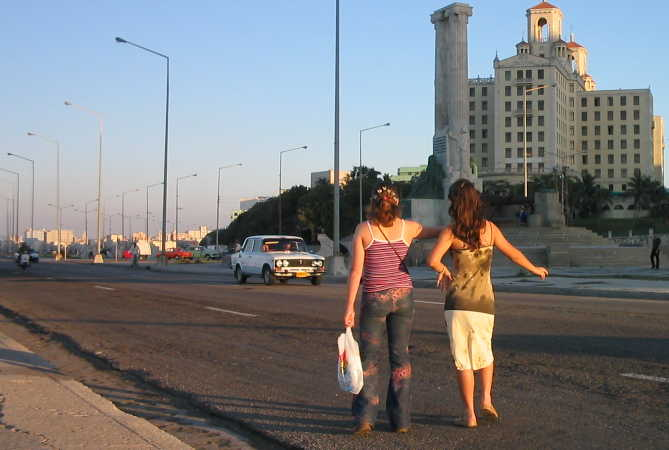
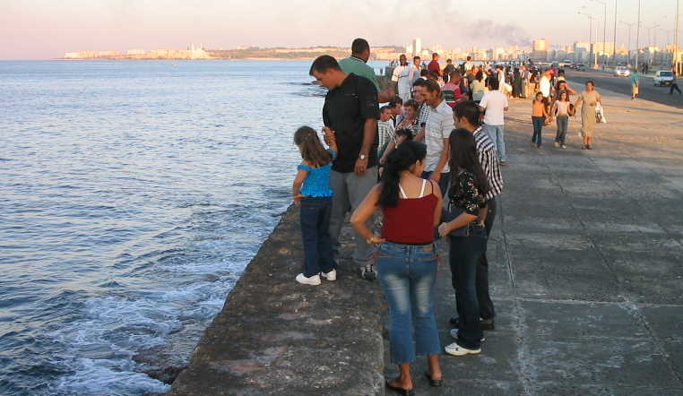

Walking through Havana
A collection of photographs taken in early 2004
( A note on the photos: these are presented formatted for an 800-pixel-wide screen, five or six photos to a page. The quality varies, and will be less clear in AOL browsers. Photos are roughly separated into People and Places. I've put these photos online in this format for those people who just want to look at pictures of Havana, instead of dealing with Flash or javascript slideshows. All photos copyrighted by Richard Smith. Non-commercial use is ok with approval and attribution.)
People and Places
Click on the links below to go to each page of photos.
|
Havana
1
|
||||

A typical street in Central
Havana.
Frequently people asked me to take their photo. This is an example.

Ice cream, again. Lots
of ice cream in Cuba.

Catching a ride on the
Malecon. The Maine Memorial and Hotel Nacional are in the background.

Before sunset on the Malecon sea wall, one of Havana's main gathering places.
|
Havana
1
|
||||
jewishcuba.org main photo page
Photo
pages sponsored by www.jewishcuba.org